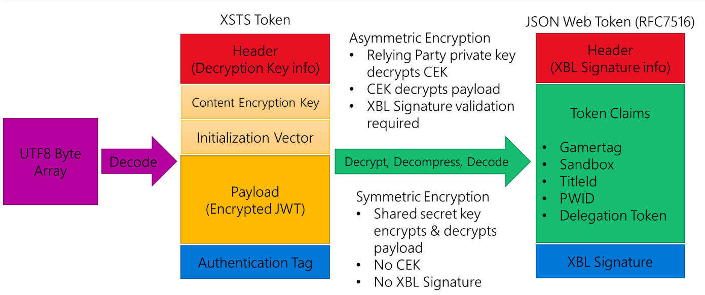

Xbox Live security tokens (XSTS tokens)
Xbox Live uses security tokens are created by the Xbox Secure Token Service (XSTS) for authentication of users and devices. XSTS tokens are also available for title use. Title XSTS tokens can be configured by developers and have varying contents depending on their intended audience.
The token used for Xbox Live is a JSON Web Token (JWT) that uses two JWE encryption types:
-
Asymmetric public / private key pair (RFC 7519) The token is encrypted using a certificate’s public key and is then decrypted on your service with the private key. The token is also digitally signed by Xbox Live to validate its origin. This is the recommended token type, as it is more secure.
-
Asymmetric public / private key pair (legacy) This token configuration does not adhere to RFC 7519. This option is only for titles migrated from the Xbox Developer Portal (XDP) and that require this format for compatibility purposes. This JWT format should not be used for new token configurations.
Partner Center Xbox Live configuration previously also included a Symmetric shared key option that used a shared key between Xbox Live and your service for encryption. This option was deprecated due to security concerns and is not available for new token configurations.
Tokens are meant for a specific relying party, which represents a set of service endpoints that share the same token configuration, encryption certificate, and signature policy. These are described in more detail below:
- Token configuration: the claims that are in the token; token lifetime.
- Encryption certificate: the key used to encrypt the token.
- Signature policy: specifies which parts of the request (headers and body data) must be signed for integrity validation.
Xbox Live services use the same pre-configured relying party that is opaque to a title. Publishers that have their own services their titles call must configure a relying party via the Partner Center Xbox Live configuration.
Token structure
The token is broken into sections including a Header and the Payload. There are other sections in the token depending on the encryption method for your token. Each part of the token is separated by a ‘.’ in the encoded token string.

Note: For Symmetric X-tokens, the format is similar but there is no Content Encryption Key or XBL Signature. The Payload is encrypted and decrypted directly with the symmetric shared secret key.
Header
The header has two sections:
Details about how the JWT is encrypted and includes the encryption, algorithm, and content type. The thumbprint of the x509 certificate used for encryption. The thumbprint should match the certificate provided by you during configuration of your relying party and the private key must be installed on the server to enable the token to be decrypted.
For deprecated symmetric X-tokens, the header only has the first section and the encryption algorithm is specified as “alg”: “dir”.
Content Encryption Key
With Asymmetric encryption the private key decrypts this content which then provides you the decryption key needed for the payload.
Not present with deprecated symmetric encryption.
Initialization Vector
Used with the AES decryptor for the payload.
Not present with deprecated symmetric encryption.
Payload
The payload is the encrypted JSON Web Token that contains the claims and information your server needs for authentication of the user.
Authentication Tag
Integrity value for the token.
Inner JSON Web Token
Once the Payload is decrypted you will have a UTF8 array that represents the RFC7516 JSON Web Token. This inner token also has a header that includes information related to generating and validating the signature on the token.
The token will be signed with the private key of the Xbox Live signing certificate to validate that the token is from Xbox Live. The header of the inner token contains the thumbprint and a URL to download the public key of the cert so that your service can do a validation of the signature. This means that your server should keep a cache of this public cert that it downloaded at runtime to re-use.
Since the Xbox Live signing cert can expire and needs to be renewed every 18 months, we recommend that your server not hard code the cert nor install it on your servers. You should always check your local cache, if you do not have the cert, download it (validating it is coming from https://xsts.xboxlive.com), and then cache it. If the cert is updated, the tokens will have a new thumbprint and URL in their headers to reflect that. If you follow the logic outlined in the Game Service sample, available for download on XGD Fast Downloads, the signature cert management your service will never have to be updated to handle a new Xbox Live signing cert.
The payload of this token contains the claims that were specified during the token configuration for the relying party. Claims that are not configured are not included in the token payload. Claim values can be traditional types (string, integer, GUID, and so on.). They can also be a JSON object representing a more complex structure.
Note: Claim values with no data can be represented through null values or can be missing from the token entirely. Title services should consider this when parsing claim values.
Identities
A set of related claims that describe aspects of a principal are known as an identity. From a structural perspective, they are claims where the value is a JSON object. That object will either be a set of claims or an array of sets of claims.
The identities that can be contained in Xbox One tokens are listed and described below (with their specific short names shown in parenthesis):
Device identity (xdi)
The claims in the device identity provide details about the device that requested the token. There can be only one device identity in the token. This means that the device identity will be a simple list of claims and values.
Title identity (xti)
The claims in the title identity provide details about the title running on Xbox One that requested the token. The token can contain only one title identity. If present in the token, the title identity will be a simple list of claims and values.
Service identity (xsi)
The claims in the service identity provide details about a service if the request came from that service instead of from Xbox One. There can be only one service identity in the token. If present, the service identity will be a simple list of claims and values.
User identity/identities (xui)
The claims in the user identity provide details about a user. If more than one user is logged in to the console, there will be more than one user identity in the token. If present, the user identity will be an array of claims sets (even if it is an array with one object).
The authorization header of the request contains the necessary information to determine which user in the token the request applies to. For additional information about processing tokens with multiple users, see Multi-user tokens below.
Aggregate identity (xai)
The claims in the aggregate identity provide a merged set of values representing all of the users in the token, such as age group (the value matches that of the youngest user) and privileges. Combining these as a separate identity enables the service to make decisions without having to perform the analysis directly, and it ensures that privileges blocked by banning are enforced, something that the service cracking the token wouldn’t be able to determine easily.
Multi-user tokens
For Xbox One, tokens will contain user identities for any user that is currently signed into the console. This means that the xui claim in the token will be an array containing one or more user objects. In the incoming request, the authorization header will contain the following:
XBL3.0 x=<user hash>;<token>
The user hash value will be one of three values:
A number that matches the user hash claim of one of the user identities in the token indicating that the request is for that specific user.
An asterisk (*), indicating that the request is for all users contained within the token. A hyphen (-), indicating that the request is not in the context of any of the users in the token.
If the user hash value in the header matches the user/hash claim of one of the user identities in the token, the request is meant for only that user. User hash values are unique to that instance but are not guaranteed to always be the same for a given user in future XSTS tokens. They should not be used as a permanent identifier or cached.
Disclaimer:
This information was gathered from a publicly accessible Game Development Kit and files dumped from a UWA devkit.